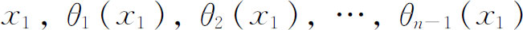
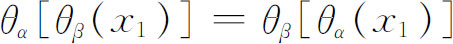

3．阿贝尔关于用根式解方程的工作
阿贝尔读了拉格朗日和高斯关于方程论的著作，当他还是中学学生时，就按高斯对二项方程的处理方法着手探讨高次方程可解性的问题。起初，阿贝尔以为他已经解决了用根式解一般的五次方程的问题，但是很快就认识到他的错误，后来，他就试图证明这样一个解答是不可能的（1824—1826）。首先他成功地证明了下述定理：可用根式求解的方程的根能以这样的形式给出，出现在根的表达式中的每个根式都可表示成方程的根和某些单位根的有理函数。然后阿贝尔用这个定理证明了(5)高于四次的一般方程用根式求解的不可能性。
由于不知道鲁菲尼的工作（第25章第2节），阿贝尔的证明是迂回而又不必要地复杂。他的文章在函数分类中还有一个错误，幸亏这个错误对论证不是本质性的。后来他发表了两个更精心的证明。一个简单、直接而又严密的证明是1879年由克罗内克根据阿贝尔的思想做出的(6)。
这样，高于四次的一般方程的求解问题由阿贝尔解决了。他还考虑了一些特殊的方程。他做了(7)分割双纽线的问题（解xn-1＝0等价于分一个圆成n个等弧的问题），并且得出一类代数方程，现在叫阿贝尔方程，它们是能用根式求解的。分圆方程（1）是阿贝尔方程的一例。更一般地说，如果一个方程的全部根都是其中一个根的有理函数，就是说，若全部根为

，其中θi是有理函数，这样的方程就称为阿贝尔方程。还有条件：对α，β的从1到n-1的全部值，
。在最后的这一工作中，他引进了两个概念（虽然没有术语），即域和在给定域中不可约的多项式。同后来伽罗瓦一样，他所说的数域是指这样的数集，这个数集中的任何两个数的和、差、积、商（除去用零作除数外）仍在集合中。例如有理数、实数和复数都形成域。一个多项式称为在一个域中（通常它的系数属于此域）是可约的，如果它能表示成低次的，系数在此域中的两个多项式的乘积。如果这个多项式不能这样表示出，就称为不可约的。
阿贝尔然后着手探讨刻画能用根式求解的全部方程的特性的问题，并在1829年他临死以前，把一些结果通知了克雷尔和勒让德。